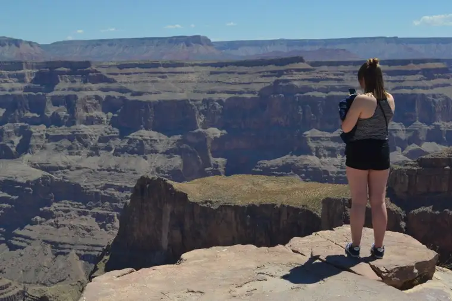
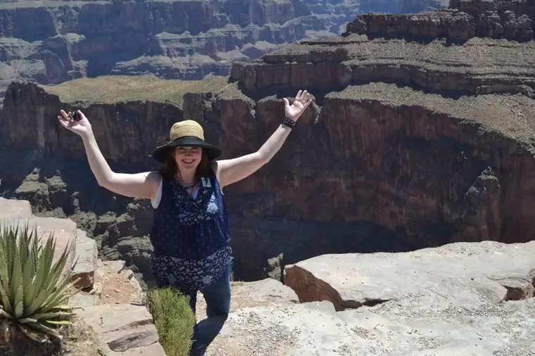
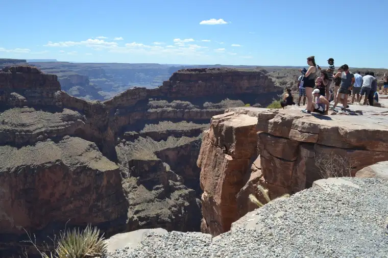
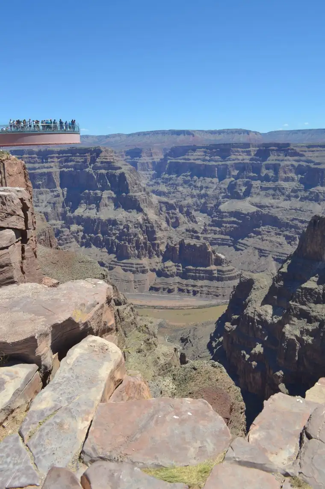
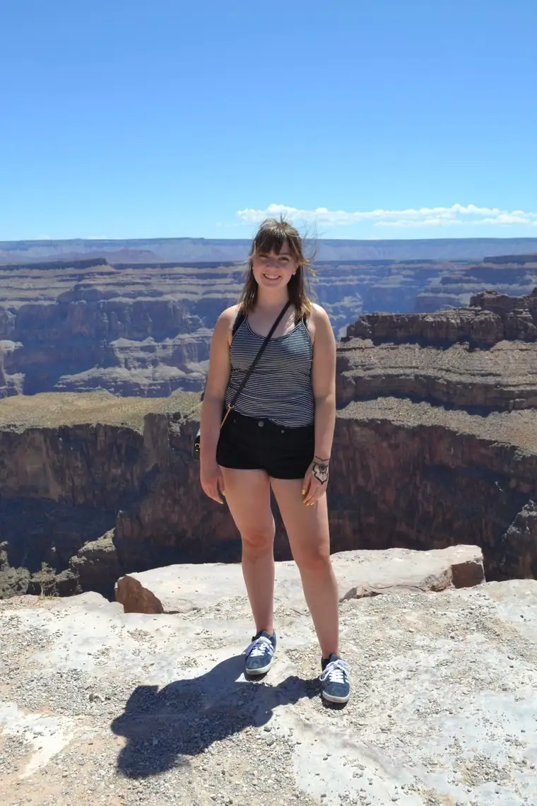

Las Vegas isn’t a place I’d ever pined to visit, but we were late to plan the senior trip we’d promised our daughter in place of a graduation party, and our budget demanded something that would accommodate the three of us without breaking the bank.
My husband, who’d been there a few times before through work, offered a vision of a reasonably-priced trip. “They really just want to get you there, expecting you’ll gamble once you’re on site,” he’d said, mentioning also the myriad fun shows and sparkling city with interesting sites that might appeal to one just making her way into the world. Though it might not be the most wholesome place, at least we’d be there with her.
So, with thinning viable options, we all agreed to give it a try. We booked our flights and hotel — the Hard Rock Hotel — and purchased advanced tickets for a show exploring the history of rock and roll that my guitarist husband and his music-loving maiden and matron might appreciate.
But as the day of departure drew near, I grew nervous. A friend of mine was dying, and I wanted to sing at his funeral; a final gift I’d hoped to offer a rare soul who’d given so much to me through his sharing. Selfishly, I prayed our trip wouldn’t conflict with the timing of God’s will for him.
Alas, the timing had gone just as I’d feared. It was hard hearing of his death, and greatly saddened me to think I couldn’t say goodbye as hoped. Within an hour of receiving the news, however, a plan took root. Rather than relinquish the chance to be there for my friend, I asked my husband and daughter if it would be okay — if it were even possible — to delay my trip a day to fulfill this corporal work of mercy. They understood and agreed.
The hoped-for changes fell beautifully into place, and I felt at peace over the situation. My luggage went with my loved ones ahead of me to keep things simple in the dash to the airport from the funeral. I could stay to tend to the life and death matters, and still have most of the trip with my girl and hubby. Every moment of the vigil and funeral, I felt divine affirmation of my choice.
But after the funeral, things began to go a little wacky. Arriving at the airport ready for what was next, I was stopped in my tracks when, at airport security, I was informed the flight had been canceled, and there were no other options for that airline for that day, or next.
I spent the rest of the day at the airport, talking to agents, trying to find an alternative and a way to make it feasible. Thankfully, another airline had a seat for me, and offered the bereavement rate. But between delays and mechanical issues, our plane never left the ground, and by day’s end, we were all sent home. Sadly, my hope of joining my dear ones for the music show were now permanently nixed.
I drove home defeated, and entered an empty, quiet house; the dog and other kids had been tucked away in other places for the week. I was beginning to feel the loss heavily — of my friend’s diminished grasp on life, and my own, though less important, diminished hopes of joining those I longed to see. But one ray of hope had come in a single seat that had opened up the next morning. I breathed deep, began preparing for another round, and caught a few hours of sleep.
Driving back to the airport in the dark the next morning in a storm, I soon found myself stepping right back into the nightmare that had begun the day prior. After a demoralizing frisking session at security (apparently the probe doesn’t like damp clothing), and finally taking off, the jolting turbulence began, my nerves already worn thin. While some passengers utilized the white barf bags, the rest clung to our arm rests, exchanging nervous glances as the pilot announced he couldn’t find an even pathway, and we’d have to endure the raucousness the rest of the flight.
Finally, the Sierra Mountains appeared, cheering me considerably, but the feeling of having been rocked off my center remained. Immediately upon landing, I was thrust into the glitz of Las Vegas in a hotel larger than the town I grew up in. Despite beautiful dimensions of the visit, I struggled to find the calm I so desperately sought.
It was on our last day that relief showed up. My husband had found a day tour of the Grand Canyon days before we left, and we all agreed it would be a wonderful way to end our stay. None of us had ever been to this natural wonder, and I knew this would be a lifetime opportunity. This chance, along with my family, was why I knew I had to get to Vegas despite the obstacles.
Our tour guide gave an incredible historical overview of the area, including details of the Hoover Dam, which we stopped at briefly, and the geology of the canyon itself. His knowledge and obvious love for the area was a gift to us, and began working to soothe my weary soul.
“It’s a funny thing about the Grand Canyon,” he said while we rolled through the Mojave Desert. “It seems that it isn’t, and then all of a sudden, it IS.” I could begin to envision how it might be, having grown up driving through the North Dakota Badlands in trips from and back to my hometown in northeast Montana. They always seemed to manifest quite suddenly, majestically, out of nowhere.
Indeed, the Grand Canyon was much like this, only in magnified form. One minute, we were looking at desert grasses and through a forest of Joshua trees. The next, this jaw-dropping wonder appeared.

Being on the west rim of this incredible dip in the earth — the guide told us the canyon is 230,000 years old at the top of the rim, and 600 billion years at the bottom — meant a more unhindered view, with no guard rails like the portions owned by the government. In some ways, this fortified my feelings of vulnerability, yet I couldn’t help but let go as I gazed out at the incredible display before me. Quite literally, it took my breath away, and I found myself drawn in, not wanting to leave.

(I took two short videos to show the depth better, from our first stop at the canyon, and the second, where we had lunch with the Hualapai Indians.)
“For you who fear my name, there will arise the sun of justice with its healing rays.” (Mal 3:20)

Somehow, despite still feeling the fragility of the previous days, I also sensed God holding me, and whispering, “I love you, Roxane, and I brought you here on purpose, to show you my glory and renew your hope.”

Without a doubt, I’ll hold this day in my heart for as long as I live. And I’ll always look back amazed at how it all came to be, all the good and all the bad, and how I realized anew my littleness, my powerlessness, my sheer dependence on God. But along with that vulnerability, I will always remember, too, the strength I felt gazing out at those incredible indentations in the earth, pondering how they had been made, even shedding quiet tears at the reality of what I was witnessing with my husband, our youngest daughter, and others that day.

In the end, it is all Deo gratias.

Q4U: Have you been to the Grand Canyon, or any of the seven natural wonders of the world? What was your experience like?